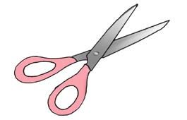
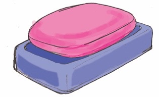
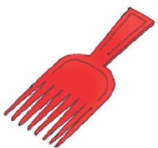
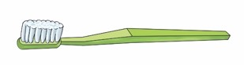

Zoezi la 4
Bainisha vifaa vya kusafisha nywele na vifaa visivyo vya kusafishia nywele.
| Na. | Kifaa | Alama |
|---|---|---|
| 1. |  | |
| 2. |  | |
| 3. |  | |
| 4. |  | |
| 5. |  | |
| 6. |
Bainisha vifaa vya kusafisha nywele na vifaa visivyo vya kusafishia nywele.
| Na. | Kifaa | Alama |
|---|---|---|
| 1. | | |
| 2. |  | |
| 3. |  | |
| 4. |  | |
| 5. |  | |
| 6. |